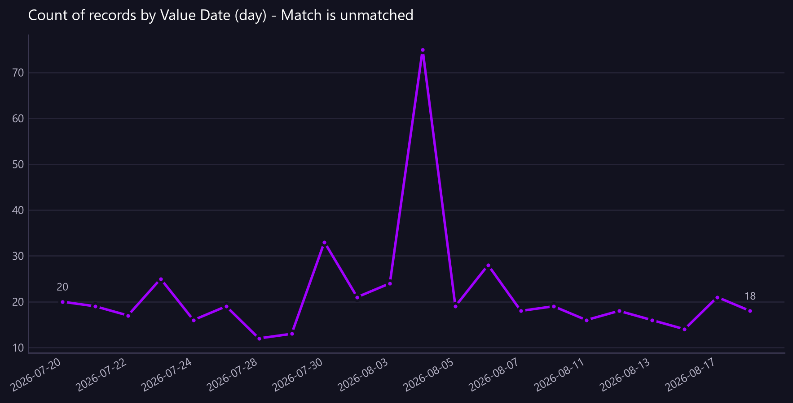

Count of records by Value Date (day) - Match is unmatched
Breaks per day across the period against the average, with unusual days marked, so it is clear whether breaks are growing or being cleared.
Asked as Show the number of reconciliation breaks per day across the month, in date order, so I can see whether breaks are growing or being cleared.

vs average % is a percentage and cannot share an axis with the amounts, so it is in the table only.
Commentary
The report displays the daily count of reconciliation breaks over a specified period, highlighting fluctuations in their occurrence. Notably, on August 4, 2026, there is a significant spike with 75 breaks, which is 243% above the average, marking it as an unusual day. This outlier suggests a need for further investigation into the causes of this anomaly. Overall, while there are fluctuations, the number of breaks generally remains below the average, except for a few days with notable increases.
| Value Date (day) | count | vs average % | Unusual |
|---|---|---|---|
| 2026-07-20 | 20.00 | -8.50 | |
| 2026-07-21 | 19.00 | -13.10 | |
| 2026-07-22 | 17.00 | -22.20 | |
| 2026-07-23 | 25.00 | 14.30 | |
| 2026-07-24 | 16.00 | -26.80 | |
| 2026-07-27 | 19.00 | -13.10 | |
| 2026-07-28 | 12.00 | -45.10 | |
| 2026-07-29 | 13.00 | -40.50 | |
| 2026-07-30 | 33.00 | 50.90 | |
| 2026-07-31 | 21.00 | -4.00 | |
| 2026-08-03 | 24.00 | 9.80 | |
| 2026-08-04 | 75.00 | 243.00 | yes |
| 2026-08-05 | 19.00 | -13.10 | |
| 2026-08-06 | 28.00 | 28.10 | |
| 2026-08-07 | 18.00 | -17.70 | |
| 2026-08-10 | 19.00 | -13.10 | |
| 2026-08-11 | 16.00 | -26.80 | |
| 2026-08-12 | 18.00 | -17.70 | |
| 2026-08-13 | 16.00 | -26.80 | |
| 2026-08-14 | 14.00 | -36.00 | |
| 2026-08-17 | 21.00 | -4.00 | |
| 2026-08-18 | 18.00 | -17.70 |
Limitations of this view
- 1 of 22 periods sit more than two standard deviations from the period average of 22 and are marked as unusual.
- The view is scoped to the value date range from 2026-07-20 to 2026-08-18.
- Data completeness depends on whether all transactions have been received and processed.
- This is synthetic, non-production data.
Downloads
{kind=link}
The Markdown documents everything considered, so a reader can hand it to an AI and ask follow-up questions about this view.
How this was produced
{
"view": "client",
"sheet": "Client View",
"source_file": "synthetic_liquidity_month.xlsx",
"mode": "aggregate",
"filters": [
{
"column": "Match",
"operator": "eq",
"value": "unmatched"
}
],
"group_by": [
"Value Date (day)"
],
"time_bucket": {
"column": "Value Date",
"granularity": "day"
},
"measures": [
"count of rows"
],
"columns": [],
"sort_by": "Value Date (day)",
"limit": null,
"join": null,
"derived": [],
"currency_corrections": [
"1 of 22 periods sit more than two standard deviations from the period average of 22 and are marked as unusual."
],
"data_as_of": null,
"measure": "",
"aggregation": "count",
"rows_in_view": 19800,
"rows_after_filters": 481,
"rows_returned": 22,
"executed_at": "2026-08-20T11:29:36"
}